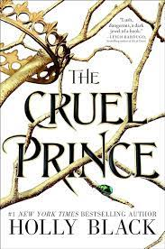
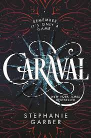
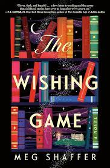
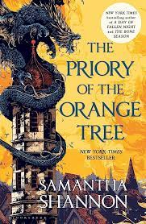
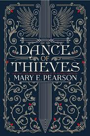

Queen Of Shadows
In Sarah J. Maas's "Throne of Glass" series, "Queen of Shadows" is the fourth book. This chapter follows Celaena Sardothien, the main character, as she comes to terms with her true identity as Aelin Galathynius, the long-lost queen of Terrasen. At the beginning of the book, Aelin is back in Adarlan, seeking revenge on those who have harmed her and her kingdom.Determined to destroy the corrupt forces that have afflicted her land for so long, she wills herself through the political minefield and perils of Rifthold. In order to prepare for the oppressive King of Adarlan, Aelin forms alliances with both unexpected new allies and old friends.Aelin discovers secrets about her past while dealing with emotional and personal struggles throughout the story. As Aelin tries to reclaim her throne and save her world from approaching darkness, the story is full of action, political intrigue, magic, and a variety of interesting characters. It also offers a blend of intense battles and emotional revelations.

Empire of Storms
In Sarah J. Maas's "Empire of Storms," the fiery and resolute queen Aelin Galathynius makes a valiant effort to form strong alliances in an effort to face the approaching threat that threatens her world. Encounters with hidden identities and ancient powers alter the course of her fight against darkness as she maneuvers through political landscapes and weaves her allies' destinies together.The story explores complicated relationships and uncovers long-kept secrets as it plays out in a whirlwind of intrigue, strategy, and sacrifice. In the face of epic battles and unrelenting foes, Aelin and her allies fight to overcome their own inner turmoil as they contend with a powerful foe who wants to completely destroy their world. The compelling conclusion of the tale puts their resiliency, unity, and enduring strength to the test.hope against insurmountable obstacles.

Tower Of Dawn
In "Tower of Dawn," by Sarah J. Maas, a crippled and emotionally damaged Chaol Westfall sets out on a crucial mission to establish allies for his kingdom on the Southern Continent. He seeks mental and physical healing amidst political intrigue. Chaol meets Yrene Towers, a gifted healer, and they connect on a deep level that reveals their shared history and latent powers. Chaol faces his identity as they fight an encroaching darkness that threatens their world, negotiate dangerous alliances, and uncover long-forgotten secrets. Together with Yrene, he finds resiliency and a revitalized sense of purpose. In order to combat the specter of impending war, their journey interweaves themes of redemption, resiliency, and the enduring strength found in the unlikeliest of alliances.

The Cruel Prince
In Holly Black's "The Cruel Prince," Jude, a mortal girl, and her murderous parents draw her into the perilous realm of Faerie. Raised in the High Court of Faerie with her sisters, Jude experiences cruelty and betrayal at the hands of the fey nobility, especially the human-hating Prince Cardan. Jude is adamant about fitting in in a world where she is an outsider, so she practices deathly games, espionage, and political intrigue to hone her abilities and acquire respect and authority. Jude falls victim to an unexpected chain of events that has the potential to destroy the Faerie realm as she makes her way through the perilous complexities of the court. She is constantly tested by the cunning prince and her own unwavering pursuit of her goals.

Kingdom Of Ash
"Kingdom of Ash," written by Sarah J. Maas, depicts the war against Erawan, the Valg King, coming to a dramatic conclusion. Aelin Galathynius, alias Fireheart, gathers her allies for the decisive conflict with the goal of defending Terrasen and defeating the Valg forces that pose a threat to the world's engulfment in darkness. Many characters' destinies are intertwined in the story, and each one is vital to the war effort. Using her powers to face Erawan and avert disaster, Aelin must face her past, accept her destiny, and make sacrifices as her alliances are put to the test. The plot, which culminates in a suspenseful finale that decides the fate of both kingdoms and heroes, tackles themes of sacrifice, resiliency, and the unwavering spirit of hope amid the chaos of war.

Caraval
The narrative of Stephanie Garber's "Caraval" traces Scarlett Dragna's journey to the ethereal, once-a-year Caraval show. Scarlett, who is eager to leave her abusive father and forced marriage behind, imagines going to the renowned show with her sister Tella. But when Tella is abducted by the mysterious showrunner, Legend, her long-awaited opportunity turns into an exciting but risky game. In an environment where truth and fiction blend together, Scarlett works her way through a maze of lies and secrets, deciphering enigmatic hints in the process of locating her sister. As Scarlett learns that there are more at stake than just her sister's freedom, the game gets more intense. Before Caraval ends and they are both permanently trapped, she has to decide what is real and what is just a part of the game as time is running out.

Fairy Tale
Cyn Balog's "Fairy Tale" delves into the life of Morgan Sparks, who perceives ethereal entities known only to him as fairies. When Morgan finds out her mother isn't mentally ill as she was made to believe, but rather a fairy-trapping witch, her world is thrown into a state of magic and peril. Morgan finds her place in her family's complicated history of dealing with the fae, shattering her faith in fairy tales. In the midst of romantic complications and an impending family curse, Morgan struggles with the hazy boundaries between good and evil in the realm of fairies. Morgan must face her family's legacy and accept her special ability to communicate with the mystical creatures that inhabit her reality as she makes her way through this newfound reality.

From Blood and Ash
The book "From Blood and Ash" by Jennifer L. Armentrout centers on Princess Poppy, a Maiden—one of the esteemed few selected to carry out a holy task while shrouded in secrecy and regulations. Poppy battles her repressed identity as she is constrained and yearns for freedom. Denied access to romantic relationships, she meets the alluring guard who breaks the rules, Hawke. A world more sinister than imagined is revealed as their forbidden connection reveals dangerous secrets. Poppy has to face her destiny and start doubting all she has been taught as hidden truths come to light and enemies wait in the shadows. Poppy must forge dangerous paths in order to learn the truths about her existence and the dark past of the kingdom, and the story tells a tale of intrigue, romance, and self-discovery.

The Wishing Game
"The Wishing Game" chronicles the summertime adventures of three childhood friends—Emma, Lane, and Mandy—whose lives become entwined with a long-standing legend in their small town. When they come across a mysterious game that grants wishes, they unintentionally unleash a strong force. They discover the game demands a high price for its gifts when their desires begin to materialize. In their race against time to undo the misplaced wishes, the trio learns the true meaning of friendship, sacrifice, and the weight of one's own desires. They must learn the history of the game and stop its influence before it devours everything they value, as they will be held accountable for their decisions.

The Priory Of the Orange Tree
The epic fantasy novel "The Priory of the Orange Tree" by Samantha Shannon is set in a world torn apart by long-standing rivalries and the impending threat of a dragon's resurgence. The narrative centers on Queen Sabran, who is trying to preserve her kingdom from the dragon's return while also attempting to carry on her dynasty. She is shielded from the approaching threat by the mage Ead Duryan, who keeps her true identity a secret. In the meantime, Tané, an Eastern dragon rider, finds a decision that has the power to change the course of history. A complex web of politics, magic, and individual quests across many cultures is revealed in this expansive story that skillfully weaves together multiple points of view. As characters navigate loyalty, love, and destiny to prevent impending chaos in their world, prophecies, forbidden magic, and secrets intertwine.

Dance Of Thieves
In the intricately detailed world of the Remnant Chronicles, Mary E. Pearson's "Dance of Thieves" takes place. The story, which takes place after the events of the previous series, centers on Kazi, a street thief turned Queen's emissary, and Jase, a strongman who has taken over as the new ruler of his family's kingdom. They find a shared objective in the midst of tension and secrets after being thrown together by shifting allegiances and a convoluted political environment. They navigate their own developing connection while setting out on a perilous quest to uncover justice and the truth as their worlds collide. A gripping story of alliances, betrayals, and the unwavering pursuit of freedom and love in a world on the verge of anarchy is told by the narrative, which is full of intrigue, romance, and high-stakes turns..